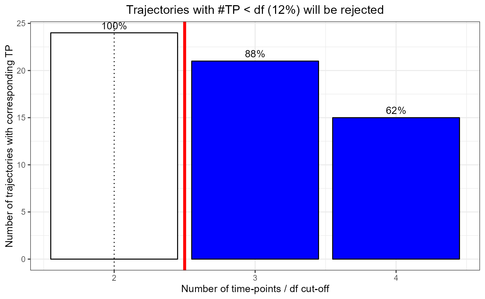

R/df_search.R
plot_nbTP_histogram.RdHistogram of the number of time-trajectories with a minimum number of time-points. When the number of time-points is inferior to the df selected, a spline cannot be fitted. The histogram highlights the number and percentage of time-trajectories that will be rejected for a given df.
plot_nbTP_histogram(eigen, dfCutOff = NA)A list of eigenSpline parameters as generated by get_eigen_spline, containing eigen$matrix, eigen$variance, eigen$model and eigen$countTP.
(int) A number (a selected df) to highlight the portion of trajectories that would be rejected form the dataset (numberTP < df). Default is NA, with no cut-off plotted.
A ggplot2 plotObject.
Graphical implementation with santaR_start_GUI
Other DFsearch:
get_eigen_DFoverlay_list(),
get_eigen_DF(),
get_eigen_spline(),
get_param_evolution(),
plot_param_evolution()
## 8 subjects, 4 time-points, 3 variables, some missing values
inputData <- acuteInflammation$data[0:32,1:3]
inputData <- inputData[-1,]
inputData <- inputData[-8,]
inputData <- inputData[-30,]
inputData <- inputData[-29,]
ind <- acuteInflammation$meta$ind[0:32]
ind <- ind[-1]
ind <- ind[-8]
ind <- ind[-30]
ind <- ind[-29]
time <- acuteInflammation$meta$time[0:32]
time <- time[-1]
time <- time[-8]
time <- time[-30]
time <- time[-29]
eigen <- get_eigen_spline(inputData, ind, time, nPC=NA, scaling="scaling_UV",
method="nipals", verbose=TRUE, centering=TRUE, ncores=0)
#> nipals calculated PCA
#> Importance of component(s):
#> PC1 PC2 PC3
#> R2 0.9486 0.03686 0.01288
#> Cumulative R2 0.9486 0.98543 0.99831
#> total time: 0.01 secs
plot_nbTP_histogram(eigen, dfCutOff=3)
